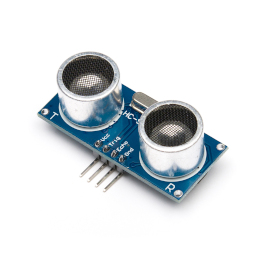

Getting reasonably robust proximity measurements from an ultrasonic sensor on the Raspberry Pi
 The HC-SR04 proximity sensor is an inexpensive and widely-used ultrasonic device. It works by emitting a short burst of sound at 40kHz, and detecting when a reflected pulse is received. Since we know the speed of sound, we can calculate how far the soundwave has travelled.
An HC-SR04 can be connected to a Raspberry Pi or microcontroller using one digital input and one digital output, although a little care needs to be taken to match the 5V logic levels of the device to the 3V logic of the Pi GPIO.
Connecting an HC-SR04 to a Raspberry Pi is a common educational exercise, and it isn't difficult to interface these devices well enough to get a very approximate measure of proximity. The problem with getting actual numerical measurements, rather than simply "near/far", is that accuracy depends on precise, sub-millisecond timing measurements. As a multi-processing system, that isn't a process for which the Pi is well-suited.
Moreover, for all its popularity, the HC-SR04 is neither an accurate nor a robust device. The software designer must deal with a number of different kinds of measurement failure, along with a high level of uncertainty in the individual measurements.
In this article I describe some tests with an application that uses continuous measurement and averaging to try to control the inaccuracies inherent in the use of the HC-SR04 with a Pi. The test application is in C as usual and, as usual, it is completely self-contained: it uses no external libraries, and conceals no details. It should work with all Pi variants from the Pi 3A onwards.
I'll be showing snippets of code, but not the full application, because there isn't space in this article. The full source is available in my GitHub repository.
How the HC-SR04 works
I'd like to start by explaining in detail how the HC-SR04 sensor actually works.
Many articles and books explain how to use the SR04 with the Pi or a microcontroller, but few explain in any detail how the unit works. To be sure, you can get adequate results without understanding the details. Nevertheless, knowing the details helps to understand why things don't work as they should, and what -- if anything -- can be done to improve matters.
The diagram below shows the timing of a single ranging cycle.
First, the falling edge of the "trigger" pin (what I call the "sound" pin in the sample application, because "trigger" is what the GPIO edge-detector does) starts the ultrasonic emitter. The trigger pulse is generally documented as being at least 10 microseconds long but, in fact, it's difficult to time an interval that short (with precision) on a Pi. It doesn't seem to do any harm if the trigger pulse is longer. The emitter produces eight cycles of a 40kHz sound waveform, which takes 200 microseconds.
Then, after emitting the eight-cycle pulse, the SR04 sets the "echo" (output) pin high. This is the point at which the application should start timing.
The received signal is a mixture of the reflected eight cycles of the emitted signal, and a whole heap of noise. Some of the noise could (unfortunately) be delayed responses from earlier measurements, and will therefore be at the same frequency as the emitted pulse. The noisy received signal is amplified, and then passed to a 40kHz filter to remove the noise (or, at least, the noise that isn't at the same frequency). The filtered signal is demodulated, to give a DC level that broadly reflects the intensity of the received signal. A comparator checks the level of the demodulator output and, if it is high enough, assumes the unit has received a reflection. It then turns the echo output off. The application should stop timing at this point.
The time for which the echo pin is high is closely related to the time taken for the emitted pulse to be transmitted and reflected back to the receiver. We can calculate (well, estimate) the distance by multiplying this time by the distance that sound travels in the measured time. The speed of sound at standard temperature and pressure is 343 metres per second.
The length of time for which the echo pin is high, however, is not a perfect measure of the round-trip time for the soundwave. The emitted pulse is not a spike of insignificant length -- it's a pulsed waveform of 200 microseconds duration. In practice, the output of the demodulator starts to increase as successive cycles of the 40kHz received signal arrive -- but it won't peak for a few cycles. This is good -- the echo pin goes high when the transmitter has already been running for 200 microseconds. If the demodulator responded instantly, to the first received cycle, the timing measurement would be too short by that amount.
Nevertheless, we can expect some uncertainty in the time for which the echo pin is high. That uncertainty is determined by how quickly the comparator responds to the received signal. This, in turn, depends on how strong the reflected signal is. Broadly speaking, we might expect highly reflective objects to appear closer by as much as a few centimetres, compared with poorly-reflecting ones. If a nearby surface is very non-reflective to sound (a teddy bear, for example), the SR04's receiver might pick up no signal at all.
The SR04 will set the echo pin low eventually, even in that situation. The timeout corresponds to a measured round-trip distance of about 12m, which is well outside the working range of the SR04. In practice, any timing measurement that gives a distance of more than about 4m can be assumed to be erroneous.
The whole measurement cycle can be repeated, according to the SR04 documentation, every 60msec. Sound travels about 20m in that time, and we hope that any spurious reflections have died away by then. In practice, though, I've found that the SR04 will pick up reflections from earlier measurement cycles, particularly when there are many reflective surfaces. It might be preferable to use a longer measurement cycle.
The SR04 is stated to have an emitted beam angle of 15 degrees. This isn't laser focus, by any means, but it does mean that the device doesn't "see" objects closer than about 3cm -- unless they're oriented in a particularly favourable way. That's because, at this distance, there's a good chance that the reflected beam will miss the receiver completely. At longer distances, the 15-degree spread means that there's a good chance that a reflected signal will actually reach the receiver, but it could be too weak to be detected. Unsurprisingly, the SR04 is better suited as a proximity sensor that a general distance-measuring device, because walls make good sound-reflecting surfaces.
The circuit
Here is the test circuit. It's a fairly common set-up, using two GPIO pins -- one to trigger the ultrasonic module into transmission, and the other to monitor its output.
Notes:
1. This resistor isn't functionally necessary, but it does provide a measure
of protection to the Pi's GPIO if the HC-SR04 module fails to a short
circuit.
2. The 1k and 2k2 resistors form a simple voltage divider, to reduce the
SR04's 5V "high" output to a level
more suitable for the Pi's 3V GPIO logic.
3. I'm using the terms "sound" and "echo" for the GPIO connections, rather
than "trigger" and "echo", because "trigger" has a specific meaning
in the test application.
The GPIO pin assignments are largely arbitrary -- the pin numbers I show
here match the test application.
Timing the echo in software
I'm not going to describe how to use the Pi GPIO to trigger the HC-SR04 -- this is a simple application of a GPIO output that has been described in many other places. However, we do have to give some thought to how we time the echo, that is, how we measure how long the SR04's echo pin stays high.
There are two steps to this timing: we must first detect when the echo pin goes high, and then when it goes low. The length of the echo pulse -- and hence the distance -- can be obtained by subtracting the times of these two events.
We can detect the low/high and high/low transitions in (at least) two ways, without using external timing hardware.
First, we could simply read from the GPIO input pin repeatedly, until it changes state. Second, we could use the GPIO edge-detection logic that is built into the kernel.
The continuous-reading method will either be CPU-intensive, or inaccurate, depending on whether the application deliberately yields the CPU during the timing cycle or not. If it doesn't yield the CPU, a great many CPU cycles are wasted in useless busy-waiting. If it does yield, then the timing accuracy will be determined by the task-switching time of the kernel. This switching time is pretty brief by human standards, but it's comparable with the durations we're trying to measure. Even if the timing code doesn't yield control, control may still be wrested from it by the kernel, if there are other tasks to service.
Using the edge-detection logic does not give better timing accuracy, but it is at least no worse, and doesn't burn the CPU for nothing. The choice between "inaccurate and wasteful" and "inaccurate and economical" seems to me to be a no-brainer. In practice, I've found that even making distance measurements at the maximum recommended rate of 60 per second doesn't generate more than 1% CPU load, when using edge-detection.
To use the edge detection logic with the sysfs
GPIO interface, we write the kind of edge we want to detect
to the pseudo-file
/sys/class/gpio/gpioXXX/edge. Suitable values are
"rising", "falling", "both", or "none". These settings only take effect
when we're using poll() or select() to detect
changes in the state of the GPIO's value file.
gpiopin.c).
#include <fcntl.h>
#include <poll.h>
int value_fd = open ("/sys/class/gpio/gpio27/value", O_RDONLY | O_NONBLOCK);
struct pollfd fdset[1];
fdset[0].fd = value_fd;
fdset[0].events = POLLPRI; // "Priority" event
fdset[0].revents = 0;
// Clear previous events
lseek (value_fd, 0, 0);
poll (fdset, 1, 5000 /* timeout in msec */);
// poll() blocks until an edge is detected
char buff[1];
read (value_fd, buff, 1); // Get pin state
Of course, we need to repeat the edge-detection timing -- once for the rising edge, and once for the falling edge.
We can get the system time in microseconds using a function like this:
#include <sys/time.h>
static long get_system_time_usec (void)
{
struct timeval tv;
gettimeofday (&tv, NULL);
return tv.tv_usec + tv.tv_sec * 1000000;
}
The amount of time it takes to make a distance measurement is not constant -- it will depend on the distance itself. This uncertainty can affect the timing of other parts of the application, and I think it works better to have the timing done its its own thread of execution. In order to reduce random fluctuations in the measured distance -- which can be substantial -- the thread can maintain a kind of running average, using a calculation like this:
double avg_distance = 0.0;
const double smoothing = 0.5;
while (...)
{
double distance = // Do the timing measurement and calculate the distance
avg_distance = distance * (1 - smoothing) + avg_distance * (smoothing);
}
smoothing is a number between 0.0 and 0.99999... that
determines how much the running average depends on the latest
measurement, and how much it depends on the cumulative effect
of previous ones. If smoothing is zero, then the
average reduces to the current value. If it is nearly 1.0, then
the average will respond only very slowly to changes. Finding the best
value depends on the noisiness of the environment and the needs
of the application.
The measurement software needs to be able to deal with situations where no timing measurement can be made at all. There are two reasons why this might happen.
First, there might simply be no reflective object in range, in which case
the SR04 will time out. Second, the application might simply be unable
to respond to the rising or falling edges in a timely fashion.
Why would this happen? Although the GPIO edge-detection logic does
guarantee that poll() will return if the pin state
actually changes, it can't guarantee that the thread doing the timing
is actually active at the time is detected.
In a multi-processing system, there's simply no way of knowing how long a particular thread has been inactive. The longest valid echo signal from the SR04 will be about 20 msec -- the time it takes sound to travel 8m. It's certainly not implausible that the timing thread is out of service for that long. We really do have to be careful to exclude measurements that are simply too long to be valid.
Because the timing thread keeps a running average, the application can tolerate a few missed measurements. However, it measurements continue to be dropped, we should just report earlier ones -- the situation might actually have changed. So the application keeps a track of the number of missed measurements, and reports the data as invalid when this passes a particular threshold.
Practical results
Making repeated measurements, more rapidly than the application really needs them, allows some control over random fluctuations in the measured distance. It takes some work to set the values of the measurement rate, and data smoothing factor, that will give the best compromise between responsiveness and predictability.
In practice, the repeatability is affected by load on the Raspberry Pi as a whole. The greater the load, the more time the CPU spends doing things that are not part of the timing thread, and the greater the error in timing. In practice, the averaged distance measurement becomes more variable as the load increases. Increasing the smoothing factor corrects this variability to some extent, but only at the expense of reduced responsiveness.
In my experience, the SR04 drops measurements even in seemingly-ideal circumstances apart from timing problems in the Pi. The reasons for this are not clear to me. Unsurprisingly, it's more common when the distance to be measured is large, but the device can drop measurements even when the distance is small. The timing thread cope with this to some extent, but it isn't clear to me whether it should even try to do so. Perhaps what's needed instead is a different brand of SR04.
Closing remarks
Using a simple, GPIO-based interface to the HC-SR04 is clearly satisfactory for some applications. It's a low-cost solution, and easy to implement. There are problems with timing in software that can be mitigated, but never completely eliminated, with a multi-processing kernel.
An alternative to doing the timing in software is to use an external timing circuit, like the one in this "UltraBorg" combined four-channel SR04 and servomotor interface. This unit can connect four HC-SR04s, and provides the distance measurements from all of them on the Pi's I2C interface. The kernel's multi-processing behaviour might prevent the application getting the sensor data as rapidly as it likes, but at least it will be correct when it does arrive.
I've used the "UltraBorg" in robotics applications, and it works fine -- bearing in mind the limitations of the SR04 sensor itself. Although you don't have to worry about timing, you still have to average the data to reduce noise, and deal with situations where there is no data available at all. And no clever hardware can change that fact that the HC-SR04 is not a precision device.